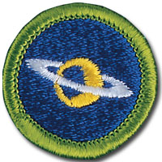

Astronomy - In-Person Class Notes
Please arrive with ample time prior to the start time of your class for registration. Remember, there will be others checking in as well that registration may take a little time, depending on the size of the class and the event held in conjunction with the class.
Your Scout uniform is required to be worn when attending this merit badge session. If you have any additional questions, please feel free to contact Brian Reiners (Scoutmater Bucky) via email at scoutmasterbucky@yahoo.com or on the phone at 612-483-0665.
Reviewing the merit badge pamphlet PRIOR to attending and doing preparation work will ensure that Scouts get the most out of these class opportunities. The merit badge pamphlet is a wealth of information that can make earning a merit badge a lot easier. It contains many of the answers and solutions needed or can at least provide direction as to where one can find the answers.
It is NOT acceptable to come unprepared to a Scoutmaster Bucky event. You can (and should) use the Scoutmaster Bucky Astronomy Merit Badge Workbook to help get a head start and organize your preparation work. Please note that the use of any workbook is merely for note taking and reference. Completion of any merit badge workbook does not warrant, guarantee, or confirm a Scout's completion of any merit badge requirements.
It should be noted that this merit badge class is not meant for those who just want to come and see what they can get done. It is possible to complete this merit badge by being properly prepared and having done the preparation work prior to the class. Preparation is a MUST! If you are not willing to participate to these expectations and standards, perhaps the Scoutmaster Bucky opportunity is not for you.
Things to remember to bring for this merit badge class:
- Merit badge blue card properly filled out and signed off by your Scoutmaster
- Astronomy Merit Badge Pamphlet
- Scout uniform
- Supporting documentation or project work pertinent to the Astronomy merit badge, which may also include a merit badge workbook for reference with notes
- Weather appropriate clothing for the time of year and location of the class for outdoor participation
- Binoculars or telescope (optional)
- A positive Scouting focus and attitude
Please read and understand the Scoutmaster Bucky Blue Card Process.
Astronomy - Online Class Notes
Please arrive with ample time prior to the start time of your class to ensure your connection to the online session is working properly. Ask people in your household to refrain from unnecessary internet usage, including but not limited to: streaming videos, online gaming, and other heavy bandwidth usage.
You will receive a link 12 to 24 hours before the class start time. Notification will come through the email address provided during the registration process, so please make sure you enter your email correctly.
Your Scout Uniform is required to be worn when attending this Online Merit Badge session. If you have any additional questions, please feel free to contact Brian Reiners; Scoutmaster Bucky via email at scoutmasterbucky@yahoo.com or on the phone at 612-483-0665.
Reviewing the Merit Badge Pamphlet PRIOR to attending and doing preparation work will insure that Scouts get the most out of these online class opportunities. The Merit Badge Pamphlet is a wealth of information that can make earning a Merit Badge a lot easier. It contains many of the answers and solutions needed or can at least provide direction as to where one can find the answers.
It is NOT acceptable to come unprepared to a Scoutmaster Bucky event. You can (and should) use the Scoutmaster Bucky American Business Merit Badge Workbook to help get a head start and organize your preparation work. Please note that the use of any workbook is merely for note taking and reference. Completion of any Merit Badge Workbook does not warrant, guarantee, or confirm a Scouts completion of any merit badge requirement(s). You can download the Scoutmaster Bucky Astronomy Merit Badge Workbook for taking notes to help you prepare.
It should be noted that this Merit Badge class is not meant for those who just want to come and see what they can get done. It is possible to complete this Merit Badge by being properly prepared and having done the preparation work prior to the class. Preparation is a MUST! If you are not willing to participate to these expectations and standards, perhaps the Scoutmaster Bucky opportunity is not for you.
Astronomy
Merit Badge
2020 Scouts BSA Requirements

Please make sure you read the top portion of this page for general participation expectations in a Scoutmaster Bucky merit badge class.
Pay careful attention to the action verbs within the requirements. An example to note:
"Tell", "explain", "describe", and "discuss" are commonly used and will require the Scout to perform these actions during the class. When these action verbs are a part of any requirement, Scouts are expected to be prepared to share. Reading responses is not acceptable since it does not fulfill the requirement of showing the Scout's knowledge and understanding.
1.
Do the following:
(a)
Explain to your counselor the most likely hazards you may encounter while participating in astronomy activities, and what you should do to anticipate, help prevent, mitigate, and respond to these hazards.
(b)
Explain first aid for injuries or illnesses such as heat and cold reactions, dehydration, bites and stings, and damage to your eyes that could occur during observation.
(c)
Describe the proper clothing and other precautions for safely making observations at night and in cold weather. Then explain how to safely observe the Sun, objects near the Sun, and the Moon.
2.
Explain what light pollution is and how it and air pollution affect astronomy.
3.
With the aid of diagrams (or real telescopes if available), do each of the following:
It is preferred that Scouts having their own binoculars and/or telescope (if practical) bring their equipment for use and demonstration during the class. Please note that it is the Scout's responsibility to manage and maintain their personal equipment and any damage or loss of these items is strictly the Scouts responsibility.
NOTE: This requirement clearly states that the requirement components for requirement 3 need to be done with the aid of diagrams (or a real telescope). Scouts should have their diagrams ready for this requirement during the class. Be Prepared.
(a)
Explain why binoculars and telescopes are important astronomical tools. Demonstrate or explain how these tools are used.
(b)
Describe the similarities and differences of several types of astronomical telescopes, including at least one that observes light beyond the visible part of the spectrum (i.e., radio, X-ray, ultraviolet, or infrared).
(c)
Explain the purposes of at least three instruments used with astronomical telescopes.
(d)
Describe the proper care and storage of telescopes and binoculars both at home and in the field.
4.
Do the following:
If instruction is done in a planetarium, Scouts must still identify the required stars and constellations outside under the natural night sky.
Unless otherwise noted, the class will take place during daylight hours, this requirement will be difficult for Scouts to complete at or during the class. Scouts should come to class with notes, drawings, sketches, or other documentation showing that they have observed the night skies and identified 10 constellations along with at least 8 stars of which 5 are of magnitude 1 or brighter (check you Merit Badge Pamphlet for explanation and guidance). The easiest way to do this is to record the date and time of the observation and describe the location of the constellation or star as it appears in the sky.
Because this class will be online, this requirement will be difficult for Scouts to complete at or during the class. Scouts should come to class with notes, drawings, sketches, or other documentation showing that they have observed the night skies and identified 10 constellations along with at least 8 stars of which 5 are of magnitude 1 or brighter (check you Merit Badge Pamphlet for explanation and guidance). The easiest way to do this is to record the date and time of the observation and describe the location of the constellation or star as it appears in the sky.
NOTE: Stars and Constellations move about the sky depending on time of year and time of night they are observed, so the tracking of date and time of the observation is crucial. Many online resources are available to aid in the identification of these stars and constellations throughout the year. Drawing the constellation as it appears during your observation in the sky may be helpful as well. It must also be noted that just saying you have done these two components of requirement 4 will NOT be enough to be signed off during the class. You must provide some sort of supporting documentation to the counselor to show that you have worked on and met the expectations of these components of Requirement 4a and 4b.
(a)
Identify in the sky at least 10 constellations, at least four of which are in the zodiac.
(b)
Identify in the sky at least eight conspicuous stars, five of which are of magnitude 1 or brighter.
(c)
Make two sketches of the Big Dipper. In one sketch, show the Big Dipper's orientation in the early evening sky. In another sketch, show its position several hours later. In both sketches, show the North Star and the horizon. Record the date and time each sketch was made.
This requirement component is pretty clear on its expectations. You will not be able to complete this requirement during the class and preparation ahead of time is the only way you will be able to have the opportunity to be signed off on this during the class. You will need to do as the requirement states and make two sketches. It is vital to make sure you record the date and time of your observation for the counselor to validate the accuracy of your sketches.
(d)
Explain what we see when we look at the Milky Way.
5.
Do the following:
(a)
List the names of the five most visible planets. Explain which ones can appear in phases similar to lunar phases and which ones cannot, and explain why.
(b)
Using the Internet (with your parent's permission) and other resources, find out when each of the five most visible planets that you identified in requirement 5a will be observable in the evening sky during the next 12 months, then compile this information in the form of a chart or table.
(c)
Describe the motion of the planets across the sky.
(d)
Observe a planet and describe what you saw.
6.
Do the following:
While some time will be allotted during the class for a portion of work time on the components of this requirement, Scouts will need to come to class with as much preparation work done as possible for the highest potential of conisderation for sign off during the class. The counselor will help as time permits and as needed, ensuring Scouts are able to get direction and guidance for completing these components as a part of and/or after the class, if needed.
Scouts will need to come to class with as much preparation work done as possible for the highest potential of conisderation for sign off during the class. At the discretion of the counselor, and as time permits, may help fill in missing bits for Scouts. Scouts not coming to the class with pre-work done and preparation, will be informed by the counselor / instructor as to follow up work required for completion.
(a)
Sketch the face of the Moon and indicate at least five seas and five craters. Label these landmarks.
(b)
Sketch the phase and position of the Moon, at the same hour and place, for four nights within a one-week period. Include landmarks on the horizon such as hills, trees, and buildings. Explain the changes you observe.
(c)
List the factors that keep the Moon in orbit around Earth.
(d)
With the aid of diagrams, explain the relative positions of the Sun, Earth, and the Moon at the times of lunar and solar eclipses, and at the times of new, first-quarter, full, and last-quarter phases of the Moon.
Note: Don't forget your diagrams for use during the class
7.
Do the following:
(a)
Describe the composition of the Sun, its relationship to other stars, and some effects of its radiation on Earth's weather and communications.
(b)
Define sunspots and describe some of the effects they may have on solar radiation.
(c)
Identify at least one red star, one blue star, and one yellow star (other than the Sun). Explain the meaning of these colors.
8.
With your counselor's approval and guidance, do ONE of the following:
This requirement will NOT be covered during the class. HOWEVER, Scouts, who have selected one of these options to complete for this requirement, will have an opportunity to share their work during the class for consideration by the counselor for sign off. Please remember that any and all requirements, for any merit badge are signed off ONLY at the discretion and satisfaction of the merit badge counselor that the requirement has met THEIR interpretation of the requirement. Be Prepared.
(a)
Visit a planetarium or astronomical observatory. Submit a written report, a scrapbook, or a video presentation afterward to your counselor that includes the following information:
(1)
Activities occurring there
(2)
Exhibits and displays you saw
(3)
Telescopes and other instruments being used
(4)
Celestial objects you observed
(b)
Plan and participate in a three-hour observation session that includes using binoculars or a telescope. List the celestial objects you want to observe, and find each on a star chart or in a guidebook. Prepare a log or notebook. Discuss with your counselor what you hope to observe prior to your observation session. Review your log or notebook with your counselor afterward.
To complete this requirement, you may use the Scout Planning Worksheet.
(c)
Plan and host a star party for your Scout troop or other group such as your class at school. Use binoculars or a telescope to show and explain celestial objects to the group.
(d)
Help an astronomy club in your community hold a star party that is open to the public.
(e)
Personally take a series of photographs or digital images of the movement of the Moon, a planet, an asteroid, meteor, or a comet. In your visual display, label each image and include the date and time it was taken. Show all positions on a star chart or map. Show your display at school or at a troop meeting. Explain the changes you observed.
9.
Find out about three career opportunities in astronomy. Pick one and find out the education, training, and experience required for this profession. Discuss this with your counselor, and explain why this profession might interest you.